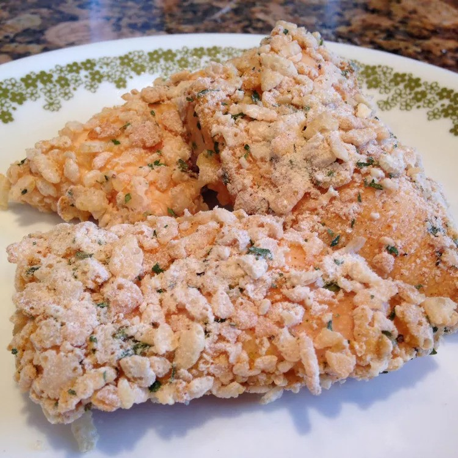

Crispy Chicken Strips Recipe

Description
This simple and satisfying recipe transforms everyday ingredients into a crunchy, flavorful chicken
dish the whole family will love. Tender strips of boneless, skinless chicken breasts are dipped in
melted butter, then coated with a savory blend of crushed crispy rice cereal, flour, and a salt-free
seasoning mix. Baked to golden perfection, these tenders come out juicy on the inside with a crispy,
flavorful crust—no frying needed!
Perfect for weeknight dinners or meal prep, the original recipe yields 4 servings and can easily be
doubled or quadrupled for a crowd. Serve with your favorite dipping sauce or alongside a fresh salad
for a balanced meal.
Ingredients
- ¼ cup butter, melted
- 1 ½ cups crispy rice cereal, coarsely crushed
- 2 tablespoons all-purpose flour
- 2 teaspoons salt-free seasoning blend
- 1 pound boneless, skinless chicken breast tenders
Steps
- Preheat oven to 400 degrees F (200 degrees C). Lightly grease a 9x13 inch baking dish.
-
Place butter in a shallow bowl. In a separate shallow bowl, mix the crushed cereal, flour, and seasoning
blend. Dip chicken tenders in the butter, then press in the cereal mixture to evenly coat. Arrange in the
prepared baking dish. Drizzle with any remaining butter.
- Bake 25 minutes in the preheated oven, or until chicken juices run clear.
Home